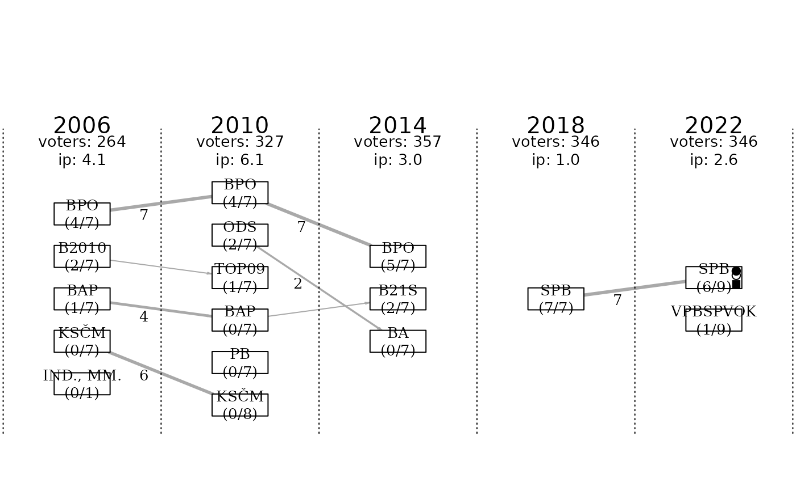

A dataset containing individual-level candidacy records from municipal elections in the municipality of Bublava (district Sokolov, Czech Republic).
Source
The dataset was compiled primarily from official election results published by the Czech Statistical Office. Additional contextual or verification information (such as post-election roles) was obtained from publicly available municipal records.
Details
| Dataset overview: | |
| Municipality: | Bublava |
| District: | Sokolov |
| Country: | Czech Republic |
| Number of elections: | 8 |
| Elections covered: | 1994, 1998, 2002, 2006, 2010, 2014, 2018, 2022 |
| Number of candidacies (rows): | 193 |
| Note: | Municipality website |
Description of variables
| Variable | Description |
| elections | Election identifiers (numeric) |
| candidate | Candidate's full name (character) |
| list_name | Name of the candidate list (character) |
| list_pos | Candidate's position on the list (numeric) |
| pref_votes | Number of preferential votes (numeric) |
| elected | Logical; TRUE if candidate was elected |
| nom_party | Nominating party (character) |
| pol_affil | Political affiliation (character) |
| mayor | TRUE if elected mayor |
| dep_mayor | TRUE if elected deputy mayor |
| board | TRUE if member of the executive board |
| gov_support | TRUE if supported the local government |
| elig_voters | Number of eligible voters (numeric) |
| ballots_cast | Number of ballots cast (numeric) |
Each record describes one candidate’s run for office, including their candidate list affiliation, position on the list, nominating party, political affiliation, number of preferential votes, and whether they were elected or held specific positions (mayor, deputy mayor, member of the executive body).
The dataset also includes contextual election-level information, such as the number of eligible voters and ballots cast, which can be used to calculate voter turnout and related indicators. These variables appear only once per election and constituency (they may be stored in a single candidate row for that election/constituency)
References
Hornek, J. (2022). Zhroucene obce v Ceske republice (Failed Municipalities in the Czech Republic). Dissertation thesis. Charles University. [Full text]
Hornek, J., & Juptner, P. (2020). Endangered Municipalities? Case Study of Three Small and Critically Indebted Czech Municipalities. NISPAcee Journal of Public Administration and Policy, 13(1), 35-59. [Full text]
Hornek, J. (2016). Politicke dopady zadluzovani malych obci v Ceske republice (Political Impacts of Indebtedness of Small Municipalities in the Czech Republic) [Publisher link]
Hornek, J. (2014). Politicke dopady zadluzovani malych obci v CR (Financing of Small Municipalities in the Czech Republic and its Political Impact). Master thesis. [Full text]
Examples
# Basic inspection
str(Bublava_SO_cz)
#> 'data.frame': 193 obs. of 14 variables:
#> $ elections : int 1994 1994 1994 1994 1994 1994 1994 1994 1994 1994 ...
#> $ candidate : chr "Grufík Vojtěch" "Hána Václav" "Štýbnar Jaroslav" "Hrubý Petr" ...
#> $ list_name : chr "SNK 1" "SNK 1" "SNK 1" "SNK 1" ...
#> $ list_pos : int 1 2 3 4 5 1 2 3 4 5 ...
#> $ pref_votes : int 87 61 74 65 60 83 68 69 66 61 ...
#> $ elected : int 1 1 0 0 0 1 1 0 0 0 ...
#> $ nom_party : chr "NK" "NK" "NK" "NK" ...
#> $ pol_affil : chr "BEZPP" "BEZPP" "BEZPP" "BEZPP" ...
#> $ mayor : int NA NA NA NA NA NA NA NA NA NA ...
#> $ dep_mayor : int NA NA NA NA NA NA NA NA NA NA ...
#> $ board : int NA NA NA NA NA NA NA NA NA NA ...
#> $ gov_support : int NA NA NA NA NA NA NA NA NA NA ...
#> $ elig_voters : int 234 NA NA NA NA NA NA NA NA NA ...
#> $ ballots_cast: int 193 NA NA NA NA NA NA NA NA NA ...
# Quick continuity diagram (basic and unformatted version)
plot_continuity(Bublava_SO_cz, elections = "2006-")
